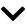

Research Projects
Adversarially Trained Restricted Boltzmann Machines
Integration of GAN training principles with standard RBM training
Dec 2023

Links: Repository, Paper
Overview: The restricted Boltzmann machine (RBM) is a type of stochastic neural network designed for unsupervised learning. We focus on the Gaussian-Bernoulli RBM, an RBM variant that learns the distribution of continuous-valued, high-dimensional data. Gaussian-Bernoulli RBMs are notoriously difficult to train; over the past decade, many new algorithms have been designed to improve the robustness of their training. In this work, we provide an overview of RBMs and the contrastive divergence training algorithm. Then, we investigate a previously proposed adversarial training algorithm which builds upon the simplest formulation of contrastive divergence learning. Finally, we extend the adversarial training approach to conditional RBMs. We show—through experiments on Gaussian mixtures and MNIST—that despite their two-layered architecture, RBMs can learn high dimensional distributions well.
Technologies:
- Python (PyTorch, NumPy, scikit-learn)
Notes: Research was completed in collaboration with Jason Eveleth for the course CSCI 2952Q: Robust Algorithms in Machine Learning taught by Yu Cheng at Brown University. I was the primary contributor.
NeuralDecompiler
x86-64 Assembly to C neural machine translation
May 2023
Links: Repository, Paper, Demo Website (may be down)
Overview: Decompilers are tools that convert low-level executable code, such as x86-64 assembly instructions, into a higher-level programming language like C, enhancing human readability. This process is crucial in fields like cybersecurity and software engineering, aiding in source code analysis, error detection, and optimization. Existing decompilers are outdated and often ineffective, requiring domain experts to create numerous heuristics for decompilation, resulting in scalability and readability challenges. Our work introduces an alternative approach employing state-of-the-art Transformer models, specifically focusing on translating x86-64 assembly to C. Despite data and computational constraints, the model achieved 88% accuracy (calculated by dividing the number of correct predictions excluding padding by the total number of non-padding elements) in training and 78% accuracy in testing, showcasing the potential of deep learning to enhance decompilation methods.
Technologies:
- Python (TensorFlow, Selenium, Beautiful Soup, Flask)
Notes: Research was completed in collaboration with Tiger Ji, Frank Chiu, and Justin Cheng for the course CSCI 2470: Deep Learning taught by Ritambhara Singh at Brown University. I was the primary contributor.
Stripmap
Python package for conformal mapping polygons to the infinite strip
Feb 2023
Links: Repository, Package
Overview: Stripmap is a Python implementation of the stripmap class of the Schwarz-Christoffel Toolbox for conformal mapping written in MATLAB. Conformal mapping is a function on the complex plane that preserves angles. Details regarding numerical methods for solving the side-length parameter problem can be found in the text Schwarz-Christoffel Mapping by Tobin A Driscoll and Lloyd N Trefethen. This package was used extensively in experiments applying conformal mapping to C. elegans image analysis procedures.
Technologies:
- Python (NumPy, SciPy, pandas, Shapely)
- MATLAB
Notes: Research conducted for the NSF-Simons Center for Quantitative Biology. I was the sole contributor.
ManyMultipleAlign
Parallelized multiple nucleotide sequence alignment tool for HPC clusters
Aug 2022
Links: Repository
Overview: ManyMultipleAlign is a pipeline for quickly performing many multiple sequence alignments; it can perform multiple sequence alignments on 100+ FASTA files containing 100+ sequences each in minutes. The program repeatedly calls Muscle5, a widely used multiple sequence alignment algorithm capable of running on multiple threads, on all FASTA files found in the input directory. ManyMultipleAlign cannot be run locally on a macOS system.
Technologies:
- Python (Biopython)
- Nextflow
Notes: Research conducted for the NSF-Simons Center for Quantitative Biology. I was the sole contributor.
NemaBlast
Nucleotide sequence matching pairwise alignment tool
Jul 2022
Links: Repository
Overview: NemaBlast is a tool for matching nucleotide sequences based on pairwise alignment scores. Given a list of sequences to be queried and another list of sequences to be referenced, NemaBlast will match each sequence from the query sequence list to a corresponding sequence from the reference sequence list with which it is best aligned. NemaBlast may be more efficient at identifying the species associated with an unknown sequence than using NCBI BLAST if a list of possible sequence matches (reference sequence list) can be provided.
Technologies:
- Python (NumPy, pandas, Biopython)
- Nextflow
Notes: Research conducted for the NSF-Simons Center for Quantitative Biology. I was the sole contributor.
Other Projects
QuantGuide
Math content development
May 2023 - Sep 2023
Links: QuantGuide
Overview: Wrote 100+ probability, statistics, calculus, and linear algebra questions with detailed solutions.
Technologies:
- LaTeX